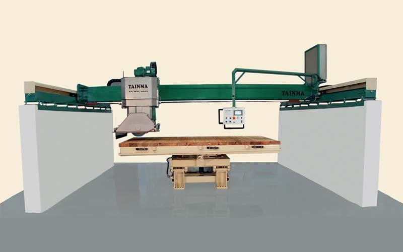
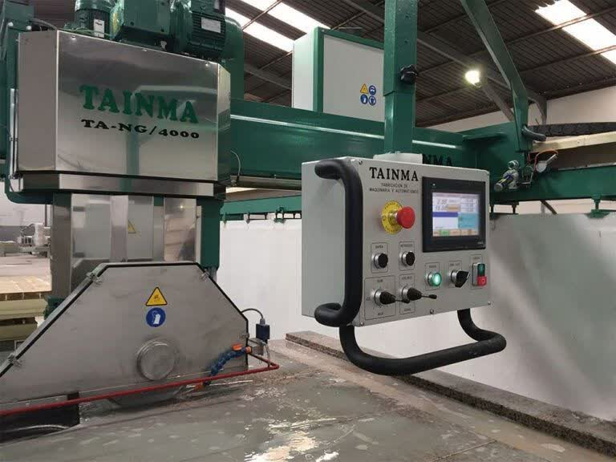
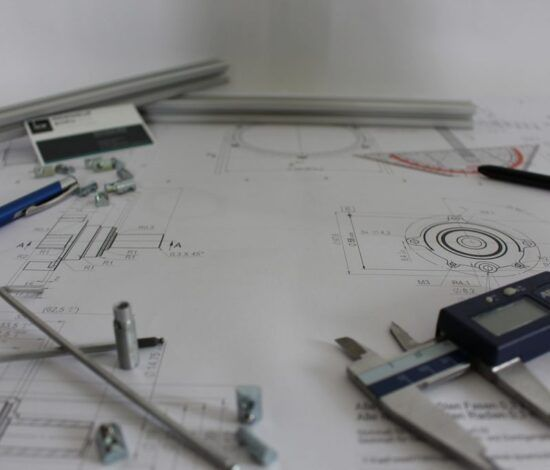

Más de 45 años fabricando soluciones para el sector de la piedra natural desde Tomelloso.

TAINMA nació en 1996 en Tomelloso (Ciudad Real) como fabricante de maquinaria para terrazo. Con el paso de los años, la empresa ha evolucionado hasta convertirse en un referente en la fabricación de equipos para mármol, granito, piedra artificial y derivados.
Con más de 45 años de experiencia acumulada en el sector, nuestra empresa combina la solidez de la fabricación española con la innovación tecnológica constante, desarrollando soluciones que mejoran la seguridad, la calidad y la productividad de nuestros clientes.
Facilitar a nuestros clientes sistemas y maquinaria que optimicen sus procesos de elaboración, mejorando tanto la seguridad como la calidad de sus productos.
Seguir ofreciendo productos innovadores y de alta calidad que avancen la tecnología del sector de la piedra, ayudando a nuestros clientes a alcanzar sus objetivos de forma más eficiente y segura.

Fabricamos maquinaria pensada para durar, con materiales de primera calidad y procesos de fabricación exigentes.
Invertimos en I+D+i para desarrollar equipos que incorporen las últimas tecnologías del sector.
Mantenemos una relación familiar con nuestros clientes, entendiéndola como la base de un buen servicio.
Nos comprometemos con la calidad, la seguridad y el cumplimiento de plazos en cada proyecto.
Contacte con nosotros para conocer cómo podemos ayudarle a mejorar su taller.